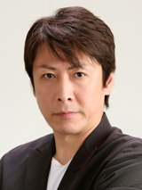

Hiroyuki Kinoshita is a Japanese actor and voice actor. He works in animes such as Knight's & Magic and Yakitate!! Japan.
- Gender: Male
- Birthday: October 23, 1958
| |
Hiroyuki Kinoshita is a Japanese actor and voice actor. He works in animes such as Knight's & Magic and Yakitate!! Japan.
|
 |
|---|
 |
Cafe Master | Soul Eater NOT! | The Cafe Master is the owner of Deathbucks Cafe in Death City, who offers part-time jobs for students of Shibusen to work in his cafe as waiters or waitresses. |